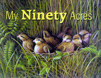

Pulitzer prize-winning author Louis Bromfield (1896-1956) wrote eloquently about the importance of rural life and sustainable agriculture to our collective future. This charming excerpt from his story, "My Ninety Acres," is reprinted from Return to Pleasant Valley , a collection of Bromfield's writings edited by MOTHER EARTH NEWS contributing editor George DeVault.
-MOTHER
In the first weeks after I came home I never thought about my father's friend, old Walter Oakes. Indeed I had very nearly forgotten his existence. And then one day I heard Wayne, one of the boys on the farm, say something about My Ninety Acres, and I remembered it all and asked, "is Walter Oakes still alive?"
"Alive!" said Wayne, "I'll say he's alive. The liveliest old man in the county. You ought to see that place. Brother, that's the kind of farm I'd like to own. He raises as much on it as most fellows raise on five times that much land."
Wayne, of course, was only 20. He couldn't know how once people had laughed when Walter Oakes spoke proudly of My Ninety Acres. Clearly they didn't laugh any more. Clearly Walter Oakes was the best farmer in all the county, very likely the best farmer in all the rich Ohio country.
The next Sunday I walked over the hills to My Ninety Acres. As I came down the long hill above the farm I saw it hadn't changed much. The house still looked well painted and neat with its white walls and green shutters, and the barn was a bright, new, prosperous red.
As I walked down the hill I thought, "This is the most beautiful farm in America-the most beautiful, rich farm in the world-My Ninety Acres."
The corn stood waist high and vigorous and green, the oats thick and strong, the wheat already turning a golden yellow. In the meadow the bumblebees were working on clover that rose almost as high as a man's thighs.
I pushed open the little gate and walked into the dooryard with the neatly mown grass bordered by lilacs and peonies and day lilies ... I remembered enough to know I should find old Walter somewhere in the fields. Sunday afternoon he always spent walking over the place. As a small boy I had followed him and my father many times.
So I went down toward the creek, and as I turned the corner by the barnyard I saw him down below, moving along a fencerow. Two sheep dogs were with him, the great-great-great-grandchildren of the pair I had known as a boy. They were running in and out of the hedgerow yapping joyously. I stood a moment, watching the scene.
It was Nellie that had that idea about lettin' fencerows grow up. I always found out Nellie was pretty right about farmin'. She was hardly ever wrong... I guess never.
The fencerow bordered a meadow of deep, thick hay, and below, among feathery willows, wound the clear spring stream where I had often gone swimming with Walter's boys: John, who had been everything Walter had hoped for in a son, the best loved, who was buried somewhere in the Argonne; and Robert, who had gone away to become rich and powerful. There was something lonely about the figure of the old man wandering along the fencerow filled with sassafras and elderberry. For no reason I could understand I felt a lump come to my throat.
Then I noticed the old man's-erratic progress. He would walk a little way and then stop and, parting the bushes, peer into the tangled fencerow. Once he got down on his knees and for a long time disappeared completely in the thick clover.
Finally, as he started back along the far side of the fields, I set off down the slope toward him. He seemed to realize I must have seen him for a long time, ducking and dodging in and out of the fencerow. A faint tinge of color came into his face and he said, shyly, "I was just snoopin' around my 90 acres, I like to see what goes on here and I don't get time during the week."
He looked down at his big hands and noticed, as I did, that some of the black, damp loam of the fencerow still clung to them. He brushed them awkwardly together. "I was just digging into the fencerow to see what was going on there underground. A fellow can learn a lot by watching his own land and what goes on in it and on it. My son John - you remember the one that was killed in the war - he went to agricultural school, but I don't think he learned more there than I've learned just out of studying my own 90 acres. Nellie always said a farm could teach you more than you could teach it, if you just kept your eyes open ... Nellie ... that was my wife."
"Of course," I said. "I remember."
Then he said, "Come with me and I'll show you something."
I followed him along the fencerow, and presently he knelt and parted the bushes and beckoned to me. I knelt beside him and he pointed. "Look!" he said, and his voice grew suddenly warm. "Look at the little devils."
I looked and could see nothing at all but dried, brown leaves with a few delicate fern fronds thrusting through them. Old Walter chuckled and said, "Can't see 'em, can you? Look, over there, just by that hole in the stump." I looked, and then slowly I saw what he was pointing at. They sat in a little circle in a tiny nest, none of them much bigger than the end of one of old Walter's big thumbs-seven tiny quail. They sat very still not moving a feather, lost among the dry, brown leaves. I might not have seen them at all but for the brightness of their little eyes.
"Smart!" he said, with the same note of tenderness in his voice. "They know! They don't move!"
Then a cry of "Bob White!' came from the thick, fragrant clover behind us and Walter said, "The old man's somewhere around." The whistle was repeated, again and then again. Old Walter stood up and said, "They used to laugh at me for letting the bushes grow up in my fencerows, but they don't any more. When the chinch bugs come along all ready to eat up my corn, these little fellows will take care of 'em." He chuckles, "There's nothing a quail likes as much as a chinch bug.
"Last year Henry Talbot, down the road, lost 10 acres of corn all taken by the bugs. Henry's a nut for clear fencerows. He doesn't leave enough cover along 'em for a grasshopper. He thinks that's good farming, the old fool!" And the old man chuckled again.
We were walking now up the slope from the creek toward the house, and he went on talking, "That fencerow beside you," he said, "is just full of birds-quail and song sparrows and thrushes-the farmer's best protection. It was Nellie that had that idea about lettin' fencerows grow up. I didn't believe her at first. I was just as dumb as most other farmers. But I always found out Nellie was pretty right about farmin'. She was hardly ever wrong ... I guess never."
It wasn't the last time I saw old Walter. There was enough of my father in me to make the friendship between myself and the old man before long very nearly as warm as their friendship had been. And after all, between them, they had taught me many of the things I had come with experience to value most in life. The Sunday afternoon visits to My Ninety Acres became nearly a habit, for I found gradually that old Walter was in himself an education. He knew more of the fundamentals of soil, of crops, of livestock than any man I have ever known. Some of them he had read in books and in farm papers but he didn't trust the things he read until he tried them out, and many of them he didn't even attempt to try since out of his own wisdom he understood at once they were rubbish. Instinctively and out of experience he rejected things that ran counter to the laws of nature.
"Nellie," he would say, "always said that Nature and the land itself was the best answer to all these questions. 'If it wasn't natural it wasn't right,' Nellie would say, and I've never found that she was wrong. She used to say that there were two kinds of farms-the 'live' farms and the 'dead' ones-and you could tell the difference by looking at them. A 'live' farm was the most beautiful place in the world and a 'dead' farm was the saddest. It depended on the man who worked them, whether he loved the place and saw what was going on or whether he just went on pushing implements through the ground to make money. Nellie was awful smart about a lot of things."
Copies of Return to Pleasant Valley , published by the American Botanist, are Stock No. 1893 on MOTHER'S Bookshelf; to order, call (866) 833-7096. You can visit Bromfield's Malabar Farm, now an Ohio state park; for details, go to www.malabarfarm.org , or call (419) 892-2784.
Mother Earth News
|
 |
|
|